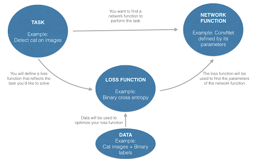

The way you define your task is the primary factor influencing how your model is going to train and perform. Say your task is to detect cars in images. Your objective function should be the following:
Given an image, output bounding boxes that contain all the cars on the image. Your output boxes should match the labeled boxes.
In mathematical terms, a possible loss (or objective) function L is:
This loss function depends on:
For a fixed value of the input batch and ground truths batch, the loss has a landscape that depends on the parameters of the network. You can try to find the minimum point on the loss landscape, but the loss landscape is almost impossible to visualize if there are more than 2 parameters.
Although it is hard to visualize the loss landscape when the network has more than 3 parameters, the landscape still exists. Updating the values will move the parameters either closer to or farther from the minimum point of this landscape. (In another AI note, you will learn techniques to visualize your loss function in higher dimensions.)
In optimizing your machine learning algorithm, it is important to note the difference between the function you are optimizing (i.e. loss function) and the function you will use to perform the task (i.e. the network function).
Interestingly (or counterintuitively), you are not optimizing the function that you will use to predict your end value (network function). Instead, you are defining a “proxy” function (loss function) which, if minimized, will make your network function correctly.
You need a loss function because the network function is unknown and you are not sure how to find the correct network function.
In summary, the way you define your optimization problem will dictate the performance of your network function.
In this section, assume that you have already chosen a task and a loss function. You will minimize the loss function to find the network function.
First, initialize the parameters of the network function so that you have a starting point for your optimization. You also need to choose your hyperparameters such as the learning rate and the batch size. They will have an important influence on the optimization.
In the visualization below, you will play with the starting point of initialization, the learning rate, and the batch size. With these parameters, you will fit a linear regression on a set of 300 data points using the gradient descent optimization algorithm. For more information on gradient descent optimization, refer to the Deep Learning Specialization (Course 1: “Neural Networks and Deep Learning”, Week 2: “Logistic Regression as a Neural Network”.) Here are some questions you should ask yourself:
Choose the intercept and slope for the "true" function that we will try to learn.
Sample a training set and explore the loss landscape.
Select an artificial landscape .
Select which optimization methods to use.
↑ Back to top